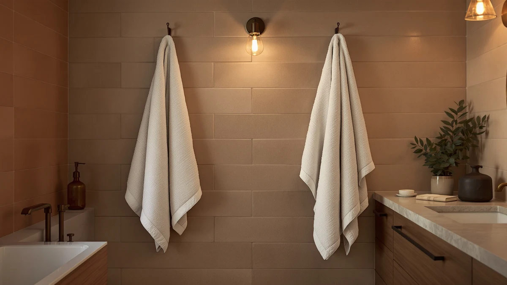

Linen Bath Towels vs Cotton: Which Is Better? (2026)
Prices and picks verified as of September 2026. Independent, reader-supported reviews.


Things to Know Before You Buy
- Linen dries about twice as fast as cotton. The flax fiber does not hold water the way cotton loops do, so a linen towel is ready to reuse within a few hours instead of overnight.
- Cotton wins on softness and price. A tightly woven cotton towel feels plusher against your skin right away, and cotton sets generally cost less per towel than linen.
- Linen softens with every wash. A new linen towel feels stiff out of the package, but the texture relaxes and gets softer over months of laundering.
- Cotton needs more frequent washing. Because cotton holds moisture longer, it can pick up a musty smell faster than linen if you leave it bunched on a hook.
- Your bathroom decides the winner. Humidity, airflow, and how often the towel gets used matter more than brand names when you choose between the two fibers.
Linen bath towels vs cotton is the choice you face every time you replace a worn-out towel set, and the two fibers behave almost nothing alike on your body or your towel bar.
Linen comes from the flax plant and dries fast thanks to long, hollow fibers that shed water instead of holding onto it. Cotton comes from a fluffier, shorter fiber that traps more air and water in its loops, which is why a cotton towel feels plush right out of the dryer. We compared both fibers on durability, price, and daily feel so you can match the towel to your bathroom instead of guessing.
Quick Answer
In the linen bath towels vs cotton matchup, cotton wins for most households because it costs less, feels softer immediately, and needs no break-in period. Linen is the better pick if you deal with a humid bathroom, want a towel that dries fast between uses, or prefer a lighter, more textured feel. Our top picks below are cotton sets, since cotton remains the easier and more affordable choice for daily use in most homes.
What is Linen Bath Towels?
Linen bath towels come from flax, a plant fiber that has been woven into cloth for thousands of years. The flax stalk yields a long, strong fiber that a mill spins into yarn and weaves into toweling, usually in a looser weave than cotton terry. That looser structure is what gives linen its texture: slightly rough at first, with visible slubs in the weave and a matte finish instead of a fluffy pile.
Because the fiber itself is hollow and absorbs less water per strand than cotton, a linen towel wicks moisture off your skin and releases it into the air quickly. Owners who switch to linen often mention the fast turnaround between uses, since a linen towel can dry on the hook while cotton is still damp in the same room. The tradeoff is the break-in period. A linen towel needs several wash cycles before it softens, and even then it keeps a crisper hand than cotton. Reviewers who stick with linen tend to value that texture and the fiber's natural resistance to mildew over the plush feel cotton delivers. Linen also carries a higher price tag, since flax is harder to harvest and process than cotton, and fewer mills produce linen toweling at scale.
What is Cotton?
Cotton bath towels use fiber harvested from the cotton plant's seed pod, spun into yarn and woven into the looped terry construction that most US bathrooms already use. Manufacturers rate cotton towels by grams per square meter, or GSM, and the sets in our picks below run in the 600 GSM range, dense enough to feel substantial without taking all night to dry.
Cotton absorbs water inside each fiber and inside the loops of the terry weave, which is why a cotton towel feels immediately soft and plush, even before the first wash. Long-staple cotton, including the Turkish cotton used in several of our picks, resists pilling better than shorter fibers and keeps that softness through hundreds of wash cycles. Reviewers consistently note that cotton towels need less time to feel broken in than linen, since the fiber starts soft rather than stiff.
The compromise is drying time. Cotton's water-loving structure means a bath towel stays damp longer on the bar, and a humid bathroom can turn that into a musty smell if you do not rotate towels often. Cotton is also the more common, more affordable option, since US mills and importers produce it at a much larger scale than linen.
Head-to-Head: Build Quality & Durability
In the linen bath towels vs cotton durability contest, linen has the edge on lifespan. Flax fiber is inherently stronger than cotton fiber, and a well-made linen towel can outlast a cotton one by years under the same wash routine, especially since linen resists the pilling that cotton develops after heavy use. The weave matters less to durability with linen, since the fiber itself carries most of the strength.
Cotton towels lean on weight and weave density instead. A 600 GSM cotton towel, like the American Soft Linen sets in our picks, uses a tighter loop construction and double-stitched hems to resist fraying at the edges, and that construction holds up well through regular machine washing. Cheaper, lighter cotton towels below 400 GSM thin out and fray faster, so weight is the number to check before you buy.
Both fibers respond differently to hard water and detergent buildup. Cotton's absorbent loops trap mineral deposits over time, which can make towels feel stiff and reduce absorbency years down the line. Linen resists that buildup better because the fiber holds less water to begin with. If you wash towels in hard water and want a set that performs the same in year five as it did in year one, linen's build quality has a real advantage, though a heavy GSM cotton towel closes most of that gap for typical use.
Head-to-Head: Price & Value
Price is where cotton separates itself in the linen bath towels vs cotton comparison. The cotton sets in our picks run between about $25 and $40 for a multi-piece set, which works out to roughly $6 to $10 per towel. Linen bath towels are harder to find in big multi-packs and typically price out closer to $20 to $35 per single towel, since flax costs more to grow, harvest, and weave than cotton.
That gap holds up over time too. Cotton's shorter lifespan means you replace towels more often, but the lower upfront cost usually offsets that math for years. Linen costs more per towel today, and its longer lifespan can close the gap eventually, but only if you keep the same towels long enough to see the payoff. For a straightforward, lower-risk purchase, cotton is the better value on day one.
Head-to-Head: Use Experience
Day to day, linen bath towels vs cotton feels like two different products entirely. Step out of the shower and a cotton towel wraps around you with the plush, familiar feel most US buyers grew up with. It soaks up water fast in the first few seconds, which is why cotton remains the default towel in most households and hotels.
Linen feels lighter and more textured against your skin, closer to a woven cloth than a fluffy pile. It still dries you off effectively, but the sensation is less like a hug and more like a brisk rubdown, and some buyers need a few uses to adjust to that. Owners who prefer linen often mention how much cooler it feels in warm climates, since the open weave breathes more than dense cotton terry.
Storage and laundry also differ. A cotton towel takes up more space when damp and needs a full dryer cycle to get fully dry, while a linen towel folds flatter and air-dries on a hook in a fraction of the time. If you share one bathroom with a full household and towels cycle through the laundry constantly, that faster turnaround is where linen earns its keep.
When to Choose Linen Bath Towels
Choose linen bath towels if you live somewhere humid, share a bathroom with limited counter or hook space, or deal with sensitive skin that reacts to heavily processed cotton. Linen's fast drying time keeps mildew and musty smells from building up between uses, which matters most in an apartment bathroom without much airflow.
Linen also fits buyers who care about long-term durability over upfront cost. If you plan to keep the same towel set for five or more years and want the texture to age well instead of pilling, flax's natural strength pays off. It is also a reasonable pick if you like a lighter towel for travel, since linen packs down smaller and dries fast enough to reuse the next morning.
When to Choose Cotton
Choose cotton if you want the softest towel available at the lowest price, which covers most households buying towels for the first time or replacing a worn-out set. Cotton is also the safer choice for families with kids, guest bathrooms, or rental properties, since it is widely available, easy to match in bulk, and forgiving if a towel gets washed more often than planned.
Our picks below, including the American Soft Linen Luxury sets, use a dense 600 GSM cotton weave that holds up to daily washing without thinning out quickly. If your bathroom has decent airflow and you are not dealing with chronic humidity, cotton's faster break-in and lower price make it the easier default over linen.
Our Top Picks
Cotton is the practical choice for most buyers in the linen bath towels vs cotton decision, so our top picks below are all 600 GSM Turkish cotton sets that deliver the plush, absorbent feel most bathrooms need.

Editor’s Pick
American Soft Linen Luxury 6
A 600 GSM Turkish cotton six-piece set that covers bath towels, hand towels, and washcloths in one order, a practical starting point if you are stocking a bathroom from scratch.
$39.99
Check Price on Amazon
Best Value
American Soft Linen Luxury 4
A four-piece 600 GSM cotton bath towel set at the lowest price per towel in our picks, a solid value if you only need to replace worn-out bath towels.
$39.15
Check Price on Amazon
Premium Choice
American Soft Linen Luxury 4
The same 600 GSM Turkish cotton construction in bright white, OEKO-TEX certified and sized generously at 27 by 54 inches for buyers who want a crisp, hotel-style look.
$39.99
Check Price on AmazonIs linen better than cotton for bath towels?
Neither fiber is better across the board in the linen bath towels vs cotton comparison.
Why do linen towels feel rough at first?
A new linen towel feels stiffer than cotton because the flax fiber has not relaxed yet.
Frequently Asked Questions
Is linen better than cotton for bath towels?
Why do linen towels feel rough at first?
Do cotton towels take longer to dry than linen?
What GSM should I look for in a cotton bath towel?
Can I mix linen and cotton towels in the same bathroom?
Final Verdict
The linen bath towels vs cotton decision comes down to how much you value fast drying and long-term durability versus immediate softness and price. Cotton wins for most households, and the American Soft Linen 600 GSM Turkish cotton sets in our picks above deliver that plush, absorbent feel at a fair price. If you deal with humidity or want a towel built to outlast years of washing, linen is worth the higher cost and the break-in period it takes to get there.